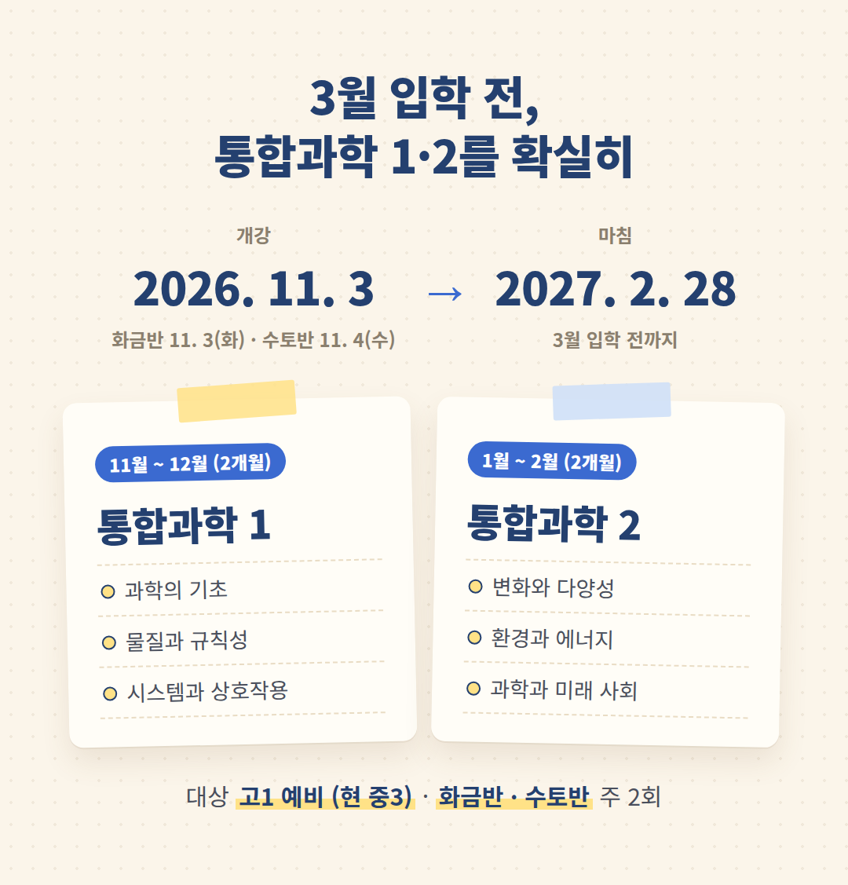

소식 1 · 10월 13일(화)


글
내년 봄 처음 만나는 '통합과학', 차근차근 준비하실 수 있도록 안내드립니다.
대구 월성동 박찬 통합과학 학원입니다.
현 중3 학생을 위한 고1 예비반을 모집합니다.
· 화금반 11월 3일(화) · 수토반 11월 4일(수) 개강
· 주 2회 · 오후 5시 30분 시작
· 2027년 2월 28일까지
고등학교 통합과학은 통합과학 1과 2, 두 권입니다.
이 두 권을 3월 입학 전까지 확실히 지도하겠습니다.
먼저 일주일 들어 보시고 등록을 결정하셔도 됩니다.
상담 053-213-3577 (오후 2시 ~ 10시) · 조암로 25 그루빌딩 501호 (월성 CGV 옆)
남교입 제2019-115호 · 고1 예비반 교습비 월 317,000원(주 2회 · 월 1,303분)